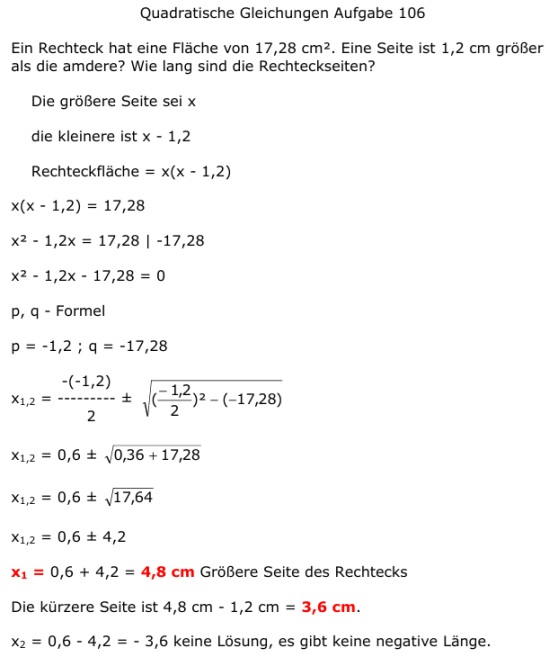

Aufgabe 106 Ein Rechteck hat eine Fläche von 17,28 cm2. Eine Seite ist 1,2 cm größer als die amdere? Wie lang sind die Rechteckseiten? Die größere Seite sei x die kleinere ist x - 1,2 Rechteckfläche = x(x - 1,2) x(x - 1,2) = 17,28 x2 - 1,2x = 17,28 |-17,28 x2 - 1,2x - 17,28 = 0 p, q - Formel p = -1,2 ; q = -17,28  x1,2 = 0,6 ± 4,2 x1 = 0,6 ± 4,2 = 4,8 cm Größere Seite des Rechtecks x2 = 0,6 - 4,2 = -3,62 keine Lösung, es gibt keine negative Länge